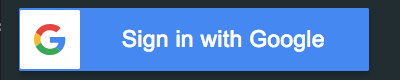
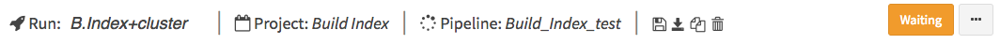

Quick Start Guide¶
This guide will walk you through how to start using dolphinNext pipelines and creating new pipelines.
Getting Started¶
First off, you need to enter dolphinNext web page: https://dolphinnext.umassmed.edu/ and click Sign in with Google button on the top left. You will be asked to choose your google account to enter your profile.
Creating Profile¶
To run existing pipelines, you need to create run environment in profile section. To do so, click on the profile button at the top right of the screen, then you’ll notice several tabs as shown below.

Follow through the steps in profile page to create SSH Key (optionally, Amazon Key) and then specify the hosts you want to use in run environments section. Once you complete these steps, you’re now able to submit jobs to specifed hosts.
Note
Before creating run environment, SSH Keys needed to be created in SSH Keys tab. If you want to create Amazon EC2 instances and submit your jobs to Amazon Cloud, then both SSH and Amazon Key are required before specifying run environment.
Running Pipelines¶
The easiest way to run pipeline is going to main page by clicking the Biocore DolphinNext button at the top left of the screen. Now, you can investigate publicly available pipelines as shown at below and select the pipeline you want run by clicking Learn More button.

Once pipeline is loaded, you will notice “Run” button at the right top of the page.

This button opens new window where you can create new project by clicking “Create a Project” button. After entering and saving the name of the project, it will be added to your project list. Now you can select your project by clicking on the project as shown in the figure below.

{kind=link}
You may proceed with entering run name which will be added to your run list of the project. Clicking “Save run” will redirect to “run page” where you can initiate your run.
Run Page
In the header of the run page, you will notice the rocket icon and the title of the run.
Run status is monitored at the right part of the header. Initially, orange Waiting button is shown. In order to initiate run, following data need to be entered:
- Work Directory: Full path of the directory, where nextflow runs will be executed.
- Run Environment: Profile that is created in the profile page. If Amazon profile is selected, then status of the profile should to be at the stage of running.
- Inputs: Value and path of the files need to be entered.

Once all requirements are satisfied,
Waitingbutton will turn in to greenready to runbutton as shown below.

You can initiate your run by clicking ready to run button. Please go through run page for detailed explanation about each module is used.
Editing Processes/Pipelines¶
The simpliest way to edit pipelines/processes is creating copy of the existing ones by clicking copy pipeline/copy process buttons on the top right of the pages.


Once you copied the pipeline/process, you can easily modify and save on the your versions.
Creating New Pipelines/Processes¶
Please follow through the Pipeline Guide to create new pipelines and Process Guide for processes.